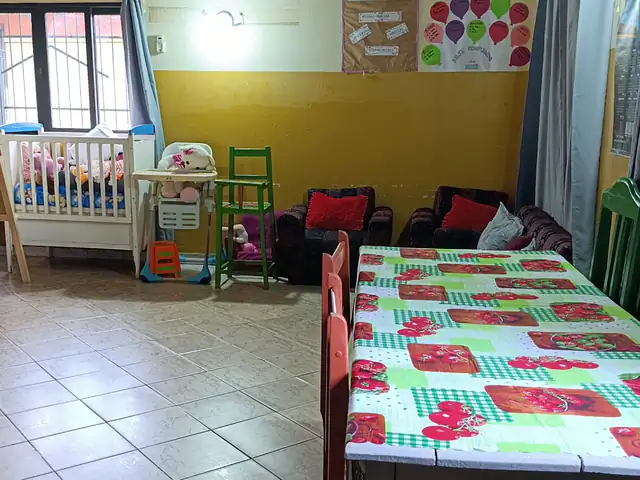
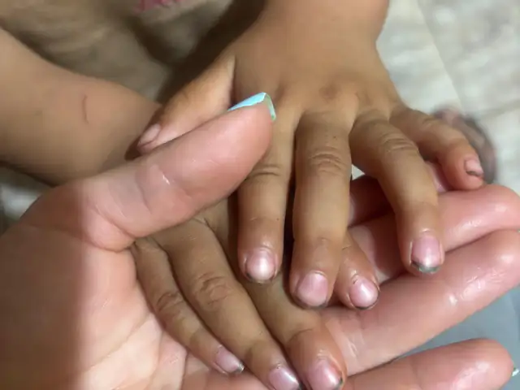
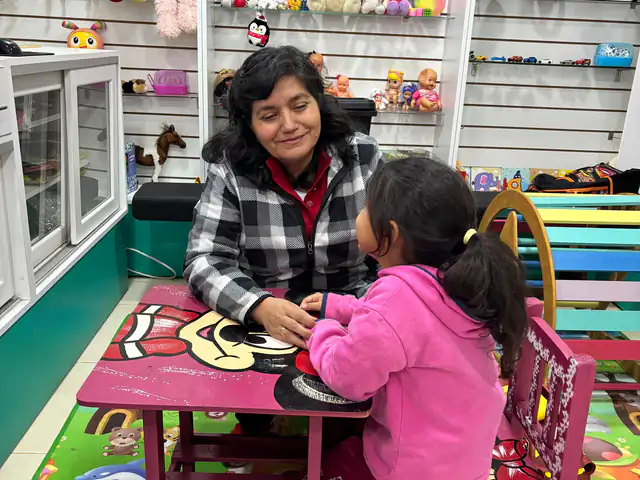
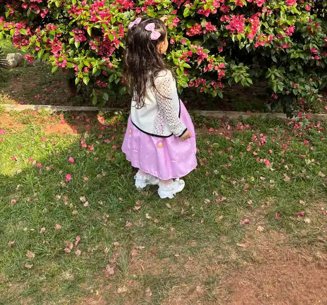
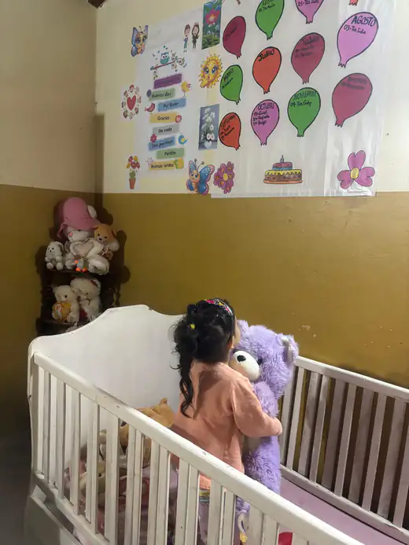
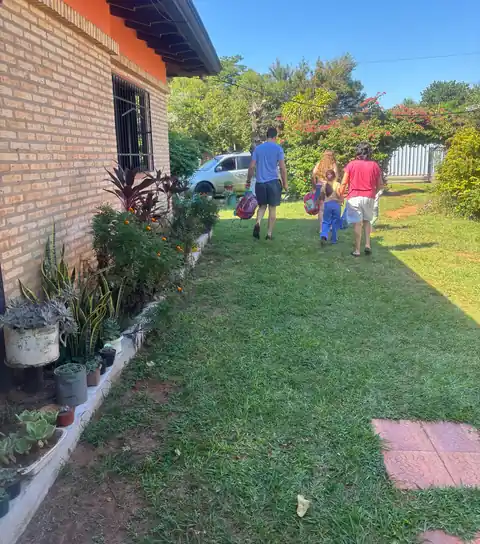
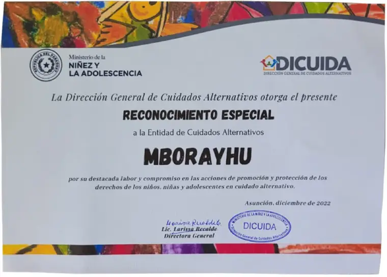

Ellos no eligieron su historia. Vos podés elegir cómo sigue.
En el Hogar Mborayhu, 12 niños y niñas de 0 a 8 años que llegaron por orden judicial, después del abandono o la violencia, tienen techo, comida, escuela y cariño. El Ministerio de la Niñez nos habilita para 14: hay lugar para 2 chicos más, pero faltan padrinos que lo sostengan todos los meses.
Lo que hace tu aporte, cada mes
Mantener el hogar cuesta Gs 1.000.000 por día. Cada padrino cubre una parte, y juntos sostenemos el mes entero. Con más padrinos, los 2 lugares que hoy están vacíos pueden recibir a dos chicos más.

Comida de verdad
Muchos llegan desnutridos. Acá comen comida casera, hecha por nuestra cocinera con verduras de la huerta del hogar.

Salud y contención
Al llegar, cada niño recibe un chequeo completo y acompañamiento psicológico.

Escuela todos los días
Desde el hogar los llevamos a la escuela todos los días y los acompañamos con las tareas, para que su historia no les quite también el futuro.
Un hogar, no una institución
Patio para jugar, una huerta, cunas y camas propias, y personas que los cuidan con amor de mamá y papá mientras la justicia define su futuro.



“Los cuidamos con amor maternal y paternal, que es lo que más necesitan y la mejor medicina para ellos.”Zunilda Ramírez, presidenta del Hogar Mborayhu
Tu donación, en buenas manos
- Fundación de Cuidados Alternativos Mborayhu, creada por Ley N° 3256 del año 2004
- Habilitada por el Ministerio de la Niñez y la Adolescencia
- Reconocida por DICUIDA, SEPRELAD y la Abogacía del Tesoro
- RUC 80031100-0 · pagos procesados por Pagopar

Preguntas frecuentes
¿Puedo cancelar el aporte mensual?
Sí, cuando quieras y sin explicaciones. Nos escribís y lo damos de baja.
¿Apadrino a un niño en particular?
Apadrinás el hogar. Los chicos están bajo medida de protección y de paso, mientras la justicia define su situación, así que tu aporte sostiene a todos.
¿Recibo comprobante?
Pagopar te envía la confirmación del pago al instante. [Comprobante de donación: a confirmar con la contadora.]
¿Puedo visitar el hogar?
Sí. Estamos en la Ruta PY02, km 174,5, Caaguazú. Coordiná tu visita al 0982 141 153.
¿Cómo sé en qué se usa mi plata?
Cada mes les contamos a los padrinos, por WhatsApp, qué se hizo con lo recaudado.